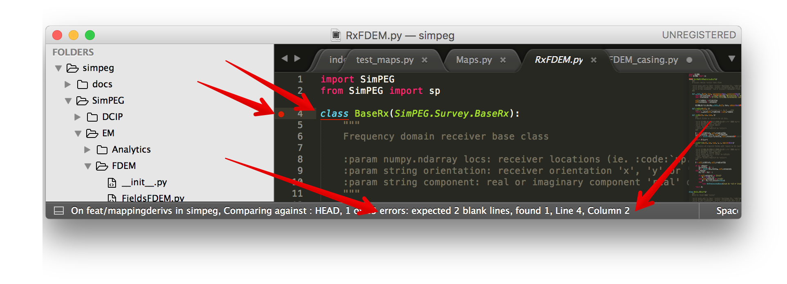

Practices#
Purpose: In the development of SimPEG, we strive to follow best practices. Here, we provide an overview of those practices and some tools we use to support them.
Here we cover
Testing#


On each update, SimPEG is tested using the continuous integration service Travis CI. We use Codecov to check and provide stats on how much of the code base is covered by tests. This tells which lines of code have been run in the test suite. It does not tell you about the quality of the tests run! In order to assess that, have a look at the tests we are running - they tell you the assumptions that we do not want to break within the code base.
Within the repository, the tests are located in the top-level tests directory. Tests are organized similar to the structure of the repository. There are several types of tests we employ, this is not an exhaustive list, but meant to provide a few places to look when you are developing and would like to check that the code you wrote satisfies the assumptions you think it should.
All tests inherit from unittest which is a part of core python.
Checkout the docs on unittest.
Compare with known values#
In a simple case, you might know the exact value of what the output should be
and you can assert that this is in fact the case. For example, in
test_basemesh.py,
we setup a 3D BaseRectangularMesh and assert that it has 3 dimensions.
import unittest
import sys
from discretize.base import BaseRectangularMesh
import numpy as np
class TestBaseMesh(unittest.TestCase):
def setUp(self):
self.mesh = BaseRectangularMesh([6, 2, 3])
def test_meshDimensions(self):
self.assertTrue(self.mesh.dim, 3)
The class inherits from unittest.TestCase. When running the tests, the
setUp is run first, in this case we attach a mesh to the instance of
this class, and then all functions with the naming convention test_XXX
are run. Here we check that the dimensions are correct for the 3D mesh.
If the value is not an integer, you can be subject to floating point errors,
so assertTrue might be too harsh. In this case, you will want to use a
tolerance. For instance in test_maps.py
class MapTests(unittest.TestCase):
# method setUp is used to create meshes
def test_mapMultiplication(self):
M = discretize.TensorMesh([2,3])
expMap = maps.ExpMap(M)
vertMap = maps.SurjectVertical1D(M)
combo = expMap*vertMap
m = np.arange(3.0)
t_true = np.exp(np.r_[0,0,1,1,2,2.])
self.assertLess(np.linalg.norm((combo * m)-t_true,np.inf),TOL)
These are rather simple examples, more advanced tests might include solving an
electromagnetic problem numerically and comparing it to an analytical
solution , or
performing an adjoint test to test Jvec and Jtvec.
Order and Derivative Tests#
Order tests can be used when you are testing differential operators (we are using a second-order, staggered grid discretization for our operators). For example, testing a 2D curl operator in test_operators.py
import numpy as np
import unittest
from SimPEG.tests import OrderTest
class TestCurl2D(OrderTest):
name = "Cell Grad 2D - Dirichlet"
meshTypes = ['uniformTensorMesh']
meshDimension = 2
meshSizes = [8, 16, 32, 64]
def getError(self):
# Test function
ex = lambda x, y: np.cos(y)
ey = lambda x, y: np.cos(x)
sol = lambda x, y: -np.sin(x)+np.sin(y)
sol_curl2d = call2(sol, self.M.gridCC)
Ec = cartE2(self.M, ex, ey)
sol_ana = self.M.edge_curl*self.M.project_face_vector(Ec)
err = np.linalg.norm((sol_curl2d-sol_ana), np.inf)
return err
def test_order(self):
self.orderTest()
Derivative tests are a particular type or Order and Derivative Tests, and since they
are used so extensively, SimPEG includes a check_derivative method.
In the case of testing a derivative, we consider a Taylor expansion of a function about \(x\). For a small perturbation \(\Delta x\),
As \(\Delta x\) decreases, we expect \(\|f(x) - f(x + \Delta x)\|\) to have first order convergence (e.g. the improvement in the approximation is directly related to how small \(\Delta x\) is, while if we include the first derivative in our approximation, we expect that \(\|f(x) + J(x)\Delta x - f(x + \Delta x)\|\) to converge at a second-order rate. For example, all maps have an associated derivative test . An example from test_FDEM_derivs.py
def derivTest(fdemType, comp):
# setup problem, survey
def fun(x):
return survey.dpred(x), lambda x: prb.Jvec(x0, x)
return tests.check_derivative(fun, x0, num=2, plotIt=False, eps=FLR)
Documentation#
Documentation helps others use your code! Please document new contributions. SimPEG uses sphinx to build the documentation. When documenting a new class or function, please include a description (with math if it solves an equation), inputs, outputs and preferably a small example.
For example:
class WeightedLeastSquares(BaseComboRegularization):
"""
L2 WeightedLeastSquares regularization with both smallness and smoothness (first order
derivative) contributions.
.. math::
\phi_m(\mathbf{m}) = \\alpha_s \| W_s (\mathbf{m} - \mathbf{m_{ref}} ) \|^2
+ \\alpha_x \| W_x \\frac{\partial}{\partial x} (\mathbf{m} - \mathbf{m_{ref}} ) \|^2
+ \\alpha_y \| W_y \\frac{\partial}{\partial y} (\mathbf{m} - \mathbf{m_{ref}} ) \|^2
+ \\alpha_z \| W_z \\frac{\partial}{\partial z} (\mathbf{m} - \mathbf{m_{ref}} ) \|^2
Note if the key word argument `mrefInSmooth` is False, then mref is not
included in the smoothness contribution.
:param discretize.base.BaseMesh mesh: SimPEG mesh
:param IdentityMap mapping: regularization mapping, takes the model from model space to the thing you want to regularize
:param numpy.ndarray indActive: active cell indices for reducing the size of differential operators in the definition of a regularization mesh
:param bool mrefInSmooth: (default = False) put mref in the smoothness component?
:param float alpha_s: (default 1e-6) smallness weight
:param float alpha_x: (default 1) smoothness weight for first derivative in the x-direction
:param float alpha_y: (default 1) smoothness weight for first derivative in the y-direction
:param float alpha_z: (default 1) smoothness weight for first derivative in the z-direction
:param float alpha_xx: (default 1) smoothness weight for second derivative in the x-direction
:param float alpha_yy: (default 1) smoothness weight for second derivative in the y-direction
:param float alpha_zz: (default 1) smoothness weight for second derivative in the z-direction
"""
Style#
Consistency make code more readable and easier for collaborators to jump in. PEP 8 provides conventions for coding in Python. SimPEG is currently not PEP 8 compliant, but we are working towards it and would appreciate contributions that do too! If you have sublime text 3, the linter can be set up through sublime text 3’s package manager. The step by step process is found here.
Sublime has PEP 8 linter packages that you can use. I use SublimeLinter-pep8. You can install it by going to your package manager (cmd + shift + p), install package and search for SublimeLinter-pep8. Installation instructions are available at SublimeLinter/SublimeLinter-pep8.
This highlights and gives you tips on how to correct the code.
{kind=link}
Below is a sample user-settings configuration for the SublimeLinter (Sublime Text > Preferences > Package Settings > SublimeLinter > Settings-User)
{
"user": {
"debug": false,
"delay": 0.25,
"error_color": "D02000",
"gutter_theme": "Packages/SublimeLinter/gutter-themes/Default/Default.gutter-theme",
"gutter_theme_excludes": [],
"lint_mode": "background",
"linters": {
"pep8": {
"@disable": false,
"args": [],
"excludes": [],
"ignore": "",
"max-line-length": null,
"select": ""
},
"proselint": {
"@disable": false,
"args": [],
"excludes": []
}
},
"mark_style": "solid underline",
"no_column_highlights_line": false,
"passive_warnings": false,
"paths": {
"linux": [],
"osx": [
"/anaconda/bin"
],
"windows": []
},
"python_paths": {
"linux": [],
"osx": [],
"windows": []
},
"rc_search_limit": 3,
"shell_timeout": 10,
"show_errors_on_save": false,
"show_marks_in_minimap": true,
"syntax_map": {
"html (django)": "html",
"html (rails)": "html",
"html 5": "html",
"javascript (babel)": "javascript",
"magicpython": "python",
"php": "html",
"python django": "python",
"pythonimproved": "python"
},
"warning_color": "DDB700",
"wrap_find": true
}
}
Install PEP8 Linter Through Sublime Text 3#
Instructions for installing and activating the pep8 linter for Mac OS X/Linux/Windows are below. For this to work, you MUST have installed sublime text 3.
Step 1: Install Sublime Linter 3:
Open sublime text 3
Open the Command Palette (cmd+shift+p on Mac OS X, ctrl+shift+p on Linux/Windows).
Type ‘install’ and select ‘Package Control: Install Package’ from the Command Palette. There will be a pause of a few seconds while Package Control finds the available packages.
When the list of available packages appears, type ‘linter’ and select ‘SublimeLinter’. Note: The github repository name is “SublimeLinter3”, but the plugin name remains “SublimeLinter”.
After a few seconds SublimeLinter will be installed and loaded. Depending on your setup, you may see some prompts from SublimeLinter. For more information on SublimeLinter’s startup actions, see Startup actions. You will see an install message.
After reading the message, close Sublime Text 3
Step 2: Install pep8 Linter:
Open sublime text 3
Open the Command Palette (cmd+shift+p on Mac OS X, ctrl+shift+p on Linux/Windows).
Type ‘install’ and select ‘Package Control: Install Package’ from the Command Palette. There will be a pause of a few seconds while Package Control finds the available packages.
When the list of available packages appears, type ‘pep8’ and select the appropriate option.
After a few seconds pep8 linter will be installed and loaded. Depending on your setup, you may see some prompts from SublimeLinter. For more information on SublimeLinter’s startup actions, see Startup actions. You will see an install message.
After reading the message, close Sublime Text 3
The next time you open a .py file in sublime text 3, the linter should be activated.
Licensing#
We want SimPEG to be a useful resource for the geoscience community and believe that following open development practices is the best way to do that. SimPEG is licensed under the MIT license which is allows open and commercial use and extension of SimPEG. It does not force packages that use SimPEG to be open source nor does it restrict commercial use.